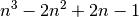
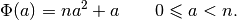
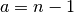
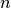
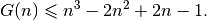
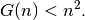
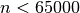

3.3. An implementation of the first model
In this section, we code the first model developed in The Golomb ruler problem and a first model.
We take the order (the number of marks) from the command line:
DEFINE_int64(n, 5, "Number of marks.");
3.3.1. An upper bound
Several upper bounds exist on Golomb rulers. For instance, we could take . Indeed, it can be shown that the sequence

forms a Golomb ruler. As its largest member is (when ), we have an upper bound on the length of a Golomb ruler of order :

Most bounds are really bad and this one isn’t an exception. The great mathematician Paul Erdös conjectured that

This conjecture hasn’t been proved yet but computational evidence has shown that the conjecture holds for  (see [Dimitromanolakis2002]).
This is perfect for our needs:
CHECK_LT(n, 65000);
const int64 max = n * n - 1;
3.3.2. The first model
We can now define our variables but instead of creating single instances of IntVars like this:
const int64 num_vars = (n*(n - 1))/2;
std::vector<IntVar*> Y(num_vars);
for (int i = 0; i < num_vars; ++i) {
Y[i] = s.MakeIntVar(1, max, StringPrintf("Y%03d", i));
}
we use the MakeIntVarArray() method:
const int64 num_vars = (n*(n - 1))/2;
std::vector<IntVar*> Y;
s.MakeIntVarArray(num_vars, 1, max, "Y_", &Y);
Note that these two methods don’t provide the same result! MakeIntVarArray() appends num_vars IntVar* to the std::vector with names Y_i where i goes from 0 to num_vars - 1. It is a convenient shortcut to quickly create an std::vector<IntVar*> (or to append some IntVar*s to an existing std::vector<IntVar*>).
StringPrintf() (shown in the first example) is a helper function declared in the header base/stringprintf.h that mimics the C function printf().
We use the AllDifferent constraint to ensure that the differences (in Y) are distinct:
s.AddConstraint(s.MakeAllDifferent(Y));
and the following constraints to ensure the inner structure of a Golomb ruler as we have seen in the previous section[1]:
int index = n - 2;
IntVar* v2 = NULL;
for (int i = 2; i <= n - 1; ++i) {
for (int j = 0; j < n-i; ++j) {
++index;
v2 = Y[j];
for (int p = j + 1; p <= j + i - 1 ; ++p) {
v2 = s.MakeSum(Y[p], v2)->Var();
}
s.AddConstraint(s.MakeEquality(Y[index], v2));
}
}
CHECK_EQ(index, num_vars - 1);
How do we tell the solver to optimize? Use an OptimizeVar to declare the objective function:
OptimizeVar* const length = s.MakeMinimize(Y[num_vars - 1], 1);
and give the variable length to the Solve() method:
s.Solve(db, collector, length);
In the section How does the solver optimize?, we will explain how the solver optimizes and the meaning of the mysterious parameter 1 in
... = s.MakeMinimize(Y[num_vars - 1], 1);
Footnote
| [1] | Remember the remark at the beginning of this chapter about the tricky sums! |
Bibliography
| [Dimitromanolakis2002] | Apostolos Dimitromanolakis. Analysis of the Golomb Ruler and the Sidon Set Problems, and Determination of Large, Near-Optimal Golomb Rulers. Ph.D. Thesis, Department of Electronic and Computer Engineering, Technical University of Crete. |
Google or-tools |
User's Manual
Google search
Welcome
Tutorial examples
Current chapter
3. Using objectives in constraint programming: the Golomb ruler problem
Previous section
3.2. The Golomb ruler problem and a first model
Next section
3.4. What model did I pass to the solver?